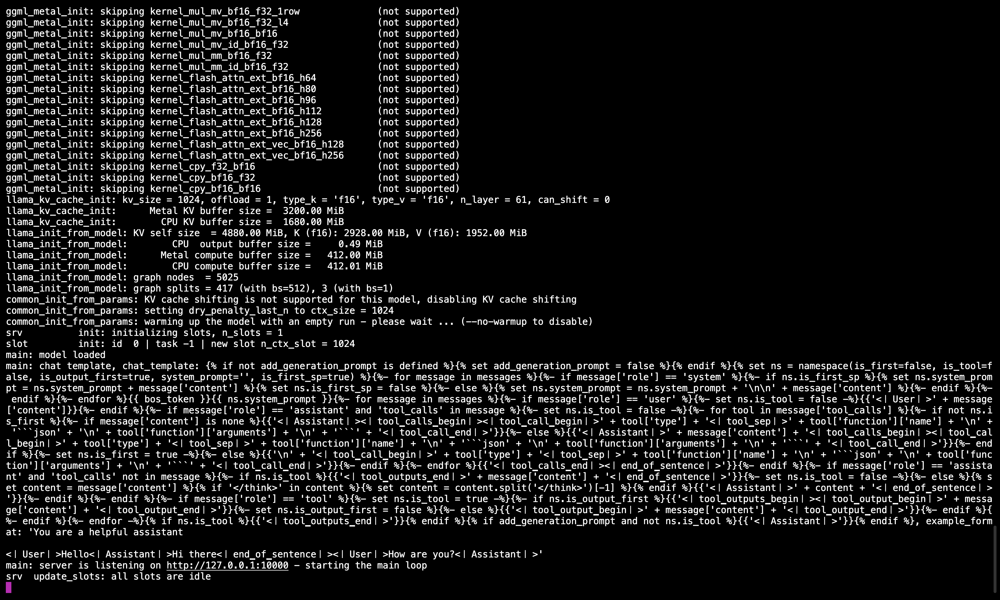

🋠Run DeepSeek R1 Dynamic 1.58-bit with Llama.cpp
A huge shoutout to UnslothAI for their incredible efforts! Thanks to their hard work, we can now run the full DeepSeek-R1 671B parameter model in its dynamic 1.58-bit quantized form (compressed to just 131GB) on Llama.cpp! And the best part? You no longer have to despair about needing massive enterprise-class GPUs or servers — it’s possible to run this model on your personal machine (albeit slowly for most consumer hardware).
The only true DeepSeek-R1 model on Ollama is the 671B version available here: https://ollama.com/library/deepseek-r1:671b. Other versions are distilled models.
This guide focuses on running the full DeepSeek-R1 Dynamic 1.58-bit quantized model using Llama.cpp integrated with Open WebUI. For this tutorial, we’ll demonstrate the steps with an M4 Max + 128GB RAM machine. You can adapt the settings to your own configuration.
Step 1: Install Llama.cpp​
You can either:
- Download the prebuilt binaries
- Or build it yourself: Follow the instructions in the Llama.cpp Build Guide
Step 2: Download the Model Provided by UnslothAI​
Head over to Unsloth’s Hugging Face page and download the appropriate dynamic quantized version of DeepSeek-R1. For this tutorial, we’ll use the 1.58-bit (131GB) version, which is highly optimized yet remains surprisingly functional.
Know your "working directory" — where your Python script or terminal session is running. The model files will download to a subfolder of that directory by default, so be sure you know its path! For example, if you're running the command below in /Users/yourname/Documents/projects, your downloaded model will be saved under /Users/yourname/Documents/projects/DeepSeek-R1-GGUF.
To understand more about UnslothAI’s development process and why these dynamic quantized versions are so efficient, check out their blog post: UnslothAI DeepSeek R1 Dynamic Quantization.
Here’s how to download the model programmatically:
# Install Hugging Face dependencies before running this:
# pip install huggingface_hub hf_transfer
from huggingface_hub import snapshot_download
snapshot_download(
repo_id = "unsloth/DeepSeek-R1-GGUF", # Specify the Hugging Face repo
local_dir = "DeepSeek-R1-GGUF", # Model will download into this directory
allow_patterns = ["*UD-IQ1_S*"], # Only download the 1.58-bit version
)
Once the download completes, you’ll find the model files in a directory structure like this:
DeepSeek-R1-GGUF/
├── DeepSeek-R1-UD-IQ1_S/
│ ├── DeepSeek-R1-UD-IQ1_S-00001-of-00003.gguf
│ ├── DeepSeek-R1-UD-IQ1_S-00002-of-00003.gguf
│ ├── DeepSeek-R1-UD-IQ1_S-00003-of-00003.gguf
ğŸ› ï¸ Update paths in the later steps to match your specific directory structure. For example, if your script was in /Users/tim/Downloads, the full path to the GGUF file would be:
/Users/tim/Downloads/DeepSeek-R1-GGUF/DeepSeek-R1-UD-IQ1_S/DeepSeek-R1-UD-IQ1_S-00001-of-00003.gguf.
Step 3: Make Sure Open WebUI is Installed and Running​
If you don’t already have Open WebUI installed, no worries! It’s a simple setup. Just follow the Open WebUI documentation. Once installed, start the application — we’ll connect it in a later step to interact with the DeepSeek-R1 model.
Step 4: Serve the Model Using Llama.cpp​
Now that the model is downloaded, the next step is to run it using Llama.cpp’s server mode. Before you begin:
-
Locate the
llama-serverbinary. If you built from source (as outlined in Step 1), thellama-serverexecutable will be located inllama.cpp/build/bin. Navigate to this directory by using thecdcommand:cd [path-to-llama-cpp]/llama.cpp/build/binReplace
[path-to-llama-cpp]with the location where you cloned or built Llama.cpp. For example:cd ~/Documents/workspace/llama.cpp/build/bin -
Point to your model folder. Use the full path to the downloaded GGUF files created in Step 2. When serving the model, specify the first part of the split GGUF files (e.g.,
DeepSeek-R1-UD-IQ1_S-00001-of-00003.gguf).
Here��’s the command to start the server:
./llama-server \
--model /[your-directory]/DeepSeek-R1-GGUF/DeepSeek-R1-UD-IQ1_S/DeepSeek-R1-UD-IQ1_S-00001-of-00003.gguf \
--port 10000 \
--ctx-size 1024 \
--n-gpu-layers 40
🔑 Parameters to Customize Based on Your Machine:
--model: Replace/[your-directory]/with the path where the GGUF files were downloaded in Step 2.--port: The server default is8080, but feel free to change it based on your port availability.--ctx-size: Determines context length (number of tokens). You can increase it if your hardware allows, but be cautious of rising RAM/VRAM usage.--n-gpu-layers: Set the number of layers you want to offload to your GPU for faster inference. The exact number depends on your GPU’s memory capacity — reference Unsloth’s table for specific recommendations.
For example, if your model was downloaded to /Users/tim/Documents/workspace, your command would look like this:
./llama-server \
--model /Users/tim/Documents/workspace/DeepSeek-R1-GGUF/DeepSeek-R1-UD-IQ1_S/DeepSeek-R1-UD-IQ1_S-00001-of-00003.gguf \
--port 10000 \
--ctx-size 1024 \
--n-gpu-layers 40
Once the server starts, it will host a local OpenAI-compatible API endpoint at:
http://127.0.0.1:10000
🖥️ Llama.cpp Server Running

After running the command, you should see a message confirming the server is active and listening on port 10000.
Be sure to keep this terminal session running, as it serves the model for all subsequent steps.
Step 5: Connect Llama.cpp to Open WebUI​
- Go to Admin Settings in Open WebUI.
- Navigate to Connections > OpenAI Connections.
- Add the following details for the new connection:
- URL:
http://127.0.0.1:10000/v1(orhttp://host.docker.internal:10000/v1when running Open WebUI in docker) - API Key:
none
- URL:
🖥️ Adding Connection in Open WebUI

After running the command, you should see a message confirming the server is active and listening on port 10000.
Once the connection is saved, you can start querying DeepSeek-R1 directly from Open WebUI! 🎉
Example: Generating Responses​
You can now use Open WebUI’s chat interface to interact with the DeepSeek-R1 Dynamic 1.58-bit model.

Notes and Considerations​
-
Performance: Running a massive 131GB model like DeepSeek-R1 on personal hardware will be slow. Even with our M4 Max (128GB RAM), inference speeds were modest. But the fact that it works at all is a testament to UnslothAI’s optimizations.
-
VRAM/Memory Requirements: Ensure sufficient VRAM and system RAM for optimal performance. With low-end GPUs or CPU-only setups, expect slower speeds (but it’s still doable!).
Thanks to UnslothAI and Llama.cpp, running one of the largest open-source reasoning models, DeepSeek-R1 (1.58-bit version), is finally accessible to individuals. While it’s challenging to run such models on consumer hardware, the ability to do so without massive computational infrastructure is a significant technological milestone.
â Big thanks to the community for pushing the boundaries of open AI research.
Happy experimenting! 🚀